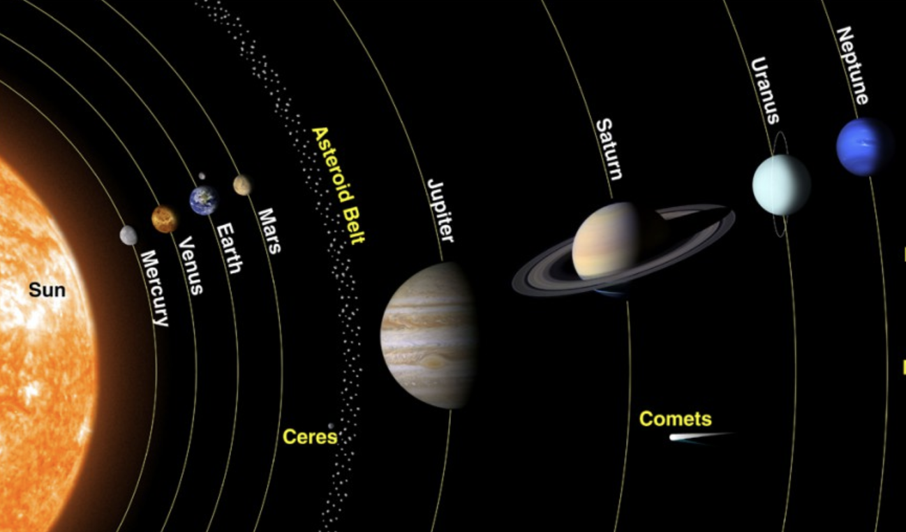
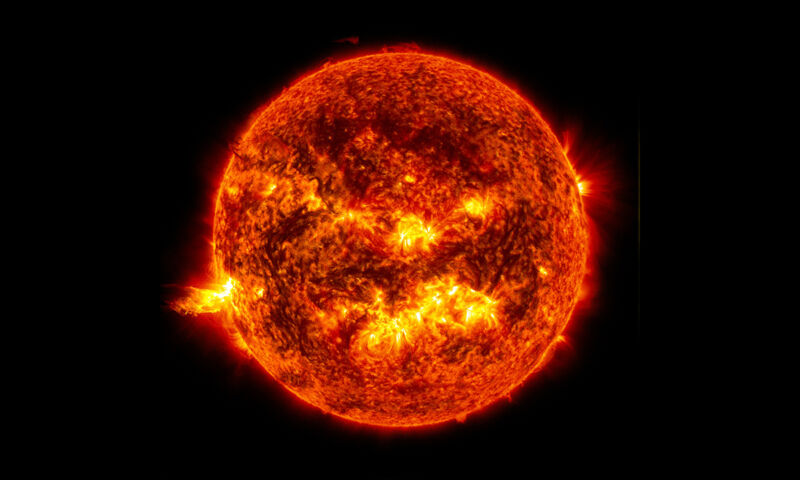

Understanding Our Solar System
Solar System

The Solar System is the gravitationally
bound system of the Sun and the objects that orbit it, either directly
or indirectly. Of the objects that orbit the Sun directly, the largest
are the eight planets, with the remainder being smaller objects, the
dwarf planets and small Solar System bodies. Of the objects that orbit
the Sun indirectly—the moons—two are larger than the smallest planet,
Mercury. The Solar System formed 4.6 billion years ago from the
gravitational collapse of a giant interstellar molecular cloud. The
vast majority of the system's mass is in the Sun, with the majority of
the remaining mass contained in Jupiter.
The four smaller inner planets, Mercury,
Venus, Earth and Mars, are terrestrial planets, being primarily
composed of rock and metal. The four outer planets are giant planets,
being substantially more massive than the terrestrials. The two
largest, Jupiter and Saturn, are gas giants, being composed mainly of
hydrogen and helium; the two outermost planets, Uranus and Neptune,
are ice giants, being composed mostly of substances with relatively
high melting points compared with hydrogen and helium, called
volatiles, such as water, ammonia and methane. All eight planets have
almost circular orbits that lie within a nearly flat disc called the
ecliptic. The Solar System also contains smaller objects. The asteroid
belt, which lies between the orbits of Mars and Jupiter, mostly
contains objects composed, like the terrestrial planets, of rock and
metal. Beyond Neptune's orbit lie the Kuiper belt and scattered disc,
which are populations of trans-Neptunian objects composed mostly of
ices, and beyond them a newly discovered population of sednoids.
Within these populations, some objects are
large enough to have rounded under their own gravity, though there is
considerable debate as to how many there will prove to be. Such
objects are categorized as dwarf planets. Identified or accepted dwarf
planets include the asteroid Ceres and the trans-Neptunian objects
Pluto and Eris. In addition to these two regions, various other
small-body populations, including comets, centaurs and interplanetary
dust clouds, freely travel between regions. Six of the planets, the
six largest possible dwarf planets, and many of the smaller bodies are
orbited by natural satellites, usually termed "moons" after the Moon.
Each of the outer planets is encircled by planetary rings of dust and
other small objects.
The solar wind, a stream of charged
particles flowing outwards from the Sun, creates a bubble-like region
in the interstellar medium known as the heliosphere. The heliopause is
the point at which pressure from the solar wind is equal to the
opposing pressure of the interstellar medium; it extends out to the
edge of the scattered disc. The Oort cloud, which is thought to be the
source for long-period comets, may also exist at a distance roughly a
thousand times further than the heliosphere. The Solar System is
located in the Orion Arm, 26,000 light-years from the center of the
Milky Way galaxy.
{kind=link}
Size and Distance
 Our solar system extends much farther than
the eight planets that orbit the Sun. The solar system also includes
the Kuiper Belt that lies past Neptune's orbit. This is a sparsely
occupied ring of icy bodies, almost all smaller than the most popular
Kuiper Belt Object, dwarf planet Pluto. And beyond the fringes of the
Kuiper belt is the Oort Cloud. This giant spherical shell surrounds
our solar system. It has never been directly observed, but its
existence is predicted based on mathematical models and observations
of comets that likely originate there. The Oort Cloud is made of icy
pieces of space debris the sizes of mountains and sometimes larger,
orbiting our Sun as far as 1.6 light years away. This shell of
material is thick, extending from 5,000 astronomical units to 100,000
astronomical units. One astronomical unit (or AU) is the distance from
the Sun to Earth, or about 93 million miles (150 million kilometers).
The Oort Cloud is the boundary of the Sun's gravitational influence,
where orbiting objects can turn around and return closer to our Sun.
Our solar system extends much farther than
the eight planets that orbit the Sun. The solar system also includes
the Kuiper Belt that lies past Neptune's orbit. This is a sparsely
occupied ring of icy bodies, almost all smaller than the most popular
Kuiper Belt Object, dwarf planet Pluto. And beyond the fringes of the
Kuiper belt is the Oort Cloud. This giant spherical shell surrounds
our solar system. It has never been directly observed, but its
existence is predicted based on mathematical models and observations
of comets that likely originate there. The Oort Cloud is made of icy
pieces of space debris the sizes of mountains and sometimes larger,
orbiting our Sun as far as 1.6 light years away. This shell of
material is thick, extending from 5,000 astronomical units to 100,000
astronomical units. One astronomical unit (or AU) is the distance from
the Sun to Earth, or about 93 million miles (150 million kilometers).
The Oort Cloud is the boundary of the Sun's gravitational influence,
where orbiting objects can turn around and return closer to our Sun.
The Sun's heliosphere doesn't extend quite
as far. The heliosphere is the bubble created by the solar wind—a
stream of electrically charged gas blowing outward from the Sun in all
directions. The boundary where the solar wind is abruptly slowed by
pressure from interstellar gases is called the termination shock. This
edge occurs between 80-100 astronomical units. The distance from Earth
to the Sun is 1 astronomical unit [AU] (150,000,000 km; 93,000,000
mi). For comparison, the radius of the Sun is 0.0047 AU (700,000 km).
Thus, the Sun occupies 0.00001% (10−5 %) of the volume of a sphere
with a radius the size of Earth's orbit, whereas Earth's volume is
roughly one millionth (10−6) that of the Sun. Jupiter, the largest
planet, is 5.2 astronomical units (780,000,000 km) from the Sun and
has a radius of 71,000 km (0.00047 AU), whereas the most distant
planet, Neptune, is 30 AU (4.5×109 km) from the Sun. With a few
exceptions, the farther a planet or belt is from the Sun, the larger
the distance between its orbit and the orbit of the next nearer object
to the Sun. For example, Venus is approximately 0.33 AU farther out
from the Sun than Mercury, whereas Saturn is 4.3 AU out from Jupiter,
and Neptune lies 10.5 AU out from Uranus. Attempts have been made to
determine a relationship between these orbital distances, but no such
theory has been accepted.
Formation
The Solar System formed 4.568 billion years
ago from the gravitational collapse of a region within a large
molecular cloud. This initial cloud was likely several light-years
across and probably birthed several stars. As is typical of molecular
clouds, this one consisted mostly of hydrogen, with some helium, and
small amounts of heavier elements fused by previous generations of
stars. As the region that would become the Solar System, known as the
pre-solar nebula, collapsed, conservation of angular momentum caused
it to rotate faster. The centre, where most of the mass collected,
became increasingly hotter than the surrounding disc.
As the contracting nebula rotated faster, it
began to flatten into a protoplanetary disc with a diameter of roughly
200 AU and a hot, dense protostar at the centre. The planets formed by
accretion from this disc,in which dust and gas gravitationally
attracted each other, coalescing to form ever larger bodies. Hundreds
of protoplanets may have existed in the early Solar System, but they
either merged or were destroyed, leaving the planets, dwarf planets,
and leftover minor bodies. Due to their higher boiling points, only
metals and silicates could exist in solid form in the warm inner Solar
System close to the Sun, and these would eventually form the rocky
planets of Mercury, Venus, Earth, and Mars. Because metallic elements
only comprised a very small fraction of the solar nebula, the
terrestrial planets could not grow very large. The giant planets
(Jupiter, Saturn, Uranus, and Neptune) formed further out, beyond the
frost line, the point between the orbits of Mars and Jupiter where
material is cool enough for volatile icy compounds to remain solid.
The ices that formed these planets were more plentiful than the metals
and silicates that formed the terrestrial inner planets, allowing them
to grow massive enough to capture large atmospheres of hydrogen and
helium, the lightest and most abundant elements. Leftover debris that
never became planets congregated in regions such as the asteroid belt,
Kuiper belt, and Oort cloud. The Nice model is an explanation for the
creation of these regions and how the outer planets could have formed
in different positions and migrated to their current orbits through
various gravitational interactions.
Within 50 million years, the pressure and
density of hydrogen in the centre of the protostar became great enough
for it to begin thermonuclear fusion. The temperature, reaction rate,
pressure, and density increased until hydrostatic equilibrium was
achieved: the thermal pressure equalled the force of gravity. At this
point, the Sun became a main-sequence star. The main-sequence phase,
from beginning to end, will last about 10 billion years for the Sun
compared to around two billion years for all other phases of the Sun's
pre-remnant life combined. Solar wind from the Sun created the
heliosphere and swept away the remaining gas and dust from the
protoplanetary disc into interstellar space, ending the planetary
formation process. The Sun is growing brighter; early in its
main-sequence life its brightness was 70% that of what it is today.
The Solar System will remain roughly as we know it today until the
hydrogen in the core of the Sun has been entirely converted to helium,
which will occur roughly 5 billion years from now. This will mark the
end of the Sun's main-sequence life. At this time, the core of the Sun
will contract with hydrogen fusion occurring along a shell surrounding
the inert helium, and the energy output will be much greater than at
present.
{kind=link}
Structure and Composition
 The principal component of the Solar System
is the Sun, a G2 main-sequence star that contains 99.86% of the
system's known mass and dominates it gravitationally. The Sun's four
largest orbiting bodies, the giant planets, account for 99% of the
remaining mass, with Jupiter and Saturn together comprising more than
90%. The remaining objects of the Solar System (including the four
terrestrial planets, the dwarf planets, moons, asteroids, and comets)
together comprise less than 0.002% of the Solar System's total mass.
Most large objects in orbit around the Sun lie near the plane of
Earth's orbit, known as the ecliptic. The planets are very close to
the ecliptic, whereas comets and Kuiper belt objects are frequently at
significantly greater angles to it. As a result of the formation of
the Solar System planets, and most other objects, orbit the Sun in the
same direction that the Sun is rotating (counter-clockwise, as viewed
from above Earth's north pole). There are exceptions, such as Halley's
Comet. Also most of the larger moons orbit their planets in this
prograde direction and most larger objects rotate themselves in the
same direction (with Venus being a notable retrograde exception).
The principal component of the Solar System
is the Sun, a G2 main-sequence star that contains 99.86% of the
system's known mass and dominates it gravitationally. The Sun's four
largest orbiting bodies, the giant planets, account for 99% of the
remaining mass, with Jupiter and Saturn together comprising more than
90%. The remaining objects of the Solar System (including the four
terrestrial planets, the dwarf planets, moons, asteroids, and comets)
together comprise less than 0.002% of the Solar System's total mass.
Most large objects in orbit around the Sun lie near the plane of
Earth's orbit, known as the ecliptic. The planets are very close to
the ecliptic, whereas comets and Kuiper belt objects are frequently at
significantly greater angles to it. As a result of the formation of
the Solar System planets, and most other objects, orbit the Sun in the
same direction that the Sun is rotating (counter-clockwise, as viewed
from above Earth's north pole). There are exceptions, such as Halley's
Comet. Also most of the larger moons orbit their planets in this
prograde direction and most larger objects rotate themselves in the
same direction (with Venus being a notable retrograde exception).
The overall structure of the charted regions
of the Solar System consists of the Sun, four relatively small inner
planets surrounded by a belt of mostly rocky asteroids, and four giant
planets surrounded by the Kuiper belt of mostly icy objects.
Astronomers sometimes informally divide this structure into separate
regions. The inner Solar System includes the four terrestrial planets
and the asteroid belt. The outer Solar System is beyond the asteroids,
including the four giant planets. Since the discovery of the Kuiper
belt, the outermost parts of the Solar System are considered a
distinct region consisting of the objects beyond Neptune. Most of the
planets in the Solar System have secondary systems of their own, being
orbited by planetary objects called natural satellites, or moons (two
of which, Titan and Ganymede, are larger than the planet Mercury),
and, in the case of the four giant planets, by planetary rings, thin
bands of tiny particles that orbit them in unison. Most of the largest
natural satellites are in synchronous rotation, with one face
permanently turned toward their parent.
Kepler's laws of planetary motion describe
the orbits of objects about the Sun. Following Kepler's laws, each
object travels along an ellipse with the Sun at one focus. Objects
closer to the Sun (with smaller semi-major axes) travel more quickly
because they are more affected by the Sun's gravity. On an elliptical
orbit, a body's distance from the Sun varies over the course of its
year. A body's closest approach to the Sun is called its perihelion,
whereas its most distant point from the Sun is called its aphelion.
The orbits of the planets are nearly circular, but many comets,
asteroids, and Kuiper belt objects follow highly elliptical orbits.
The positions of the bodies in the Solar System can be predicted using
numerical models. Although the Sun dominates the system by mass, it
accounts for only about 2% of the angular momentum.The planets,
dominated by Jupiter, account for most of the rest of the angular
momentum due to the combination of their mass, orbit, and distance
from the Sun, with a possibly significant contribution from comets.
The Sun, which comprises nearly all the
matter in the Solar System, is composed of roughly 98% hydrogen and
helium. Jupiter and Saturn, which comprise nearly all the remaining
matter, are also primarily composed of hydrogen and helium. A
composition gradient exists in the Solar System, created by heat and
light pressure from the Sun; those objects closer to the Sun, which
are more affected by heat and light pressure, are composed of elements
with high melting points. Objects farther from the Sun are composed
largely of materials with lower melting points. The boundary in the
Solar System beyond which those volatile substances could condense is
known as the frost line, and it lies at roughly 5 AU from the Sun.
The objects of the inner Solar System are
composed mostly of rock, the collective name for compounds with high
melting points, such as silicates, iron or nickel, that remained solid
under almost all conditions in the protoplanetary nebula. Jupiter and
Saturn are composed mainly of gases, the astronomical term for
materials with extremely low melting points and high vapour pressure,
such as hydrogen, helium, and neon, which were always in the gaseous
phase in the nebula. Ices, like water, methane, ammonia, hydrogen
sulfide, and carbon dioxide, have melting points up to a few hundred
kelvins. They can be found as ices, liquids, or gases in various
places in the Solar System, whereas in the nebula they were either in
the solid or gaseous phase. Icy substances comprise the majority of
the satellites of the giant planets, as well as most of Uranus and
Neptune (the so-called "ice giants") and the numerous small objects
that lie beyond Neptune's orbit.Together, gases and ices are referred
to as volatiles.
Sun
 The Sun is the Solar System's star and by far its most massive component. Its large mass (332,900 Earth masses), which comprises 99.86% of all the mass in the Solar System, produces temperatures and densities in its core high enough to sustain nuclear fusion of hydrogen into helium, making it a main-sequence star. This releases an enormous amount of energy, mostly radiated into space as electromagnetic radiation peaking in visible light. The Sun is a G2-type main-sequence star. Hotter main-sequence stars are more luminous. The Sun's temperature is intermediate between that of the hottest stars and that of the coolest stars. Stars brighter and hotter than the Sun are rare, whereas substantially dimmer and cooler stars, known as red dwarfs, make up 85% of the stars in the Milky Way. The Sun is a population I star; it has a higher abundance of elements heavier than hydrogen and helium ("metals" in astronomical parlance) than the older population II stars. Elements heavier than hydrogen and helium were formed in the cores of ancient and exploding stars, so the first generation of stars had to die before the Universe could be enriched with these atoms. The oldest stars contain few metals, whereas stars born later have more. This high metallicity is thought to have been crucial to the Sun's development of a planetary system because the planets form from the accretion of "metals"
{kind=link}
Inner and Outer Planets
The four terrestrial or inner planets have
dense, rocky compositions, few or no moons, and no ring systems. They
are composed largely of refractory minerals, such as the
silicates—which form their crusts and mantles—and metals, such as iron
and nickel, which form their cores. Three of the four inner planets
(Venus, Earth and Mars) have atmospheres substantial enough to
generate weather; all have impact craters and tectonic surface
features, such as rift valleys and volcanoes. The term inner planet
should not be confused with inferior planet, which designates those
planets that are closer to the Sun than Earth is (i.e. Mercury and
Venus).
The four outer planets, or giant planets
(sometimes called Jovian planets), collectively make up 99% of the
mass known to orbit the Sun.[g] Jupiter and Saturn are together more
than 400 times the mass of Earth and consist overwhelmingly of
hydrogen and helium. Uranus and Neptune are far less massive—less than
20 Earth masses each—and are composed primarily of ices. For these
reasons, some astronomers suggest they belong in their own category,
ice giants.[98] All four giant planets have rings, although only
Saturn's ring system is easily observed from Earth. The term superior
planet designates planets outside Earth's orbit and thus includes both
the outer planets and Mars.
Mercury
 Mercury (0.4 AU from the Sun) is the closest
planet to the Sun and on average, all seven other planets. The
smallest planet in the Solar System, Mercury has no natural
satellites. Besides impact craters, its only known geological features
are lobed ridges or rupes that were probably produced by a period of
contraction early in its history. Mercury's very tenuous atmosphere
consists of atoms blasted off its surface by the solar wind. Its
relatively large iron core and thin mantle have not yet been
adequately explained. Hypotheses include that its outer layers were
stripped off by a giant impact, or that it was prevented from fully
accreting by the young Sun's energy.
Mercury (0.4 AU from the Sun) is the closest
planet to the Sun and on average, all seven other planets. The
smallest planet in the Solar System, Mercury has no natural
satellites. Besides impact craters, its only known geological features
are lobed ridges or rupes that were probably produced by a period of
contraction early in its history. Mercury's very tenuous atmosphere
consists of atoms blasted off its surface by the solar wind. Its
relatively large iron core and thin mantle have not yet been
adequately explained. Hypotheses include that its outer layers were
stripped off by a giant impact, or that it was prevented from fully
accreting by the young Sun's energy.
Venus
 Venus (0.7 AU from the Sun) is close in size
to Earth and like Earth, has a thick silicate mantle around an iron
core, a substantial atmosphere, and evidence of internal geological
activity. It is much drier than Earth, and its atmosphere is ninety
times as dense. Venus has no natural satellites. It is the hottest
planet, with surface temperatures over 400 °C (752 °F), most likely
due to the amount of greenhouse gases in the atmosphere. No definitive
evidence of current geological activity has been detected on Venus,
but it has no magnetic field that would prevent depletion of its
substantial atmosphere, which suggests that its atmosphere is being
replenished by volcanic eruptions.
Venus (0.7 AU from the Sun) is close in size
to Earth and like Earth, has a thick silicate mantle around an iron
core, a substantial atmosphere, and evidence of internal geological
activity. It is much drier than Earth, and its atmosphere is ninety
times as dense. Venus has no natural satellites. It is the hottest
planet, with surface temperatures over 400 °C (752 °F), most likely
due to the amount of greenhouse gases in the atmosphere. No definitive
evidence of current geological activity has been detected on Venus,
but it has no magnetic field that would prevent depletion of its
substantial atmosphere, which suggests that its atmosphere is being
replenished by volcanic eruptions.
Earth
 Earth (1 AU from the Sun) is the largest and
densest of the inner planets, the only one known to have current
geological activity, and the only place where life is known to exist.
Its liquid hydrosphere is unique among the terrestrial planets, and it
is the only planet where plate tectonics has been observed. Earth's
atmosphere is radically different from those of the other planets,
having been altered by the presence of life to contain 21% free
oxygen. It has one natural satellite, the Moon, the only large
satellite of a terrestrial planet in the Solar System.
Earth (1 AU from the Sun) is the largest and
densest of the inner planets, the only one known to have current
geological activity, and the only place where life is known to exist.
Its liquid hydrosphere is unique among the terrestrial planets, and it
is the only planet where plate tectonics has been observed. Earth's
atmosphere is radically different from those of the other planets,
having been altered by the presence of life to contain 21% free
oxygen. It has one natural satellite, the Moon, the only large
satellite of a terrestrial planet in the Solar System.
Mars
Mars (1.5 AU from the Sun) is smaller than Earth and Venus. It has an atmosphere of mostly carbon dioxide with a surface pressure of 6.1 millibars (roughly 0.6% of that of Earth). Its surface, peppered with vast volcanoes, such as Olympus Mons, and rift valleys, such as Valles Marineris, shows geological activity that may have persisted until as recently as 2 million years ago. Its red colour comes from iron oxide (rust) in its soil. Mars has two tiny natural satellites (Deimos and Phobos) thought to be either captured asteroids, or ejected debris from a massive impact early in Mars's history.
{kind=link}
Jupiter
 Jupiter (5.2 AU), is 2.5 times the mass of
all the other planets put together. It is composed largely of hydrogen
and helium. Jupiter's strong internal heat creates semi-permanent
features in its atmosphere, such as cloud bands and the Great Red
Spot. Jupiter has 79 known satellites. The four largest, Ganymede,
Callisto, Io, and Europa, show similarities to the terrestrial
planets, such as volcanism and internal heating. Ganymede, the largest
satellite in the Solar System, is larger than Mercury.
Jupiter (5.2 AU), is 2.5 times the mass of
all the other planets put together. It is composed largely of hydrogen
and helium. Jupiter's strong internal heat creates semi-permanent
features in its atmosphere, such as cloud bands and the Great Red
Spot. Jupiter has 79 known satellites. The four largest, Ganymede,
Callisto, Io, and Europa, show similarities to the terrestrial
planets, such as volcanism and internal heating. Ganymede, the largest
satellite in the Solar System, is larger than Mercury.
Saturn
 Saturn (9.5 AU), distinguished by its
extensive ring system, has several similarities to Jupiter, such as
its atmospheric composition and magnetosphere. Although Saturn has 60%
of Jupiter's volume, it is less than a third as massive, Saturn is the
only planet of the Solar System that is less dense than water. The
rings of Saturn are made up of small ice and rock particles. Saturn
has 82 confirmed satellites composed largely of ice. Two of these,
Titan and Enceladus, show signs of geological activity. Titan, the
second-largest moon in the Solar System, is larger than Mercury and
the only satellite in the Solar System with a substantial atmosphere.
Saturn (9.5 AU), distinguished by its
extensive ring system, has several similarities to Jupiter, such as
its atmospheric composition and magnetosphere. Although Saturn has 60%
of Jupiter's volume, it is less than a third as massive, Saturn is the
only planet of the Solar System that is less dense than water. The
rings of Saturn are made up of small ice and rock particles. Saturn
has 82 confirmed satellites composed largely of ice. Two of these,
Titan and Enceladus, show signs of geological activity. Titan, the
second-largest moon in the Solar System, is larger than Mercury and
the only satellite in the Solar System with a substantial atmosphere.
Uranus
Uranus (19.2 AU), is the lightest of the outer planets. Uniquely among the planets, it orbits the Sun on its side; its axial tilt is over ninety degrees to the ecliptic. It has a much colder core than the other giant planets and radiates very little heat into space. Uranus has 27 known satellites, the largest ones being Titania, Oberon, Umbriel, Ariel, and Miranda.
{kind=link}
Neptune
 Neptune (30.1 AU), though slightly smaller
than Uranus, is more massive and hence more dense. It radiates more
internal heat, but not as much as Jupiter or Saturn. Neptune has 14
known satellites. The largest, Triton, is geologically active, with
geysers of liquid nitrogen. Triton is the only large satellite with a
retrograde orbit. Neptune is accompanied in its orbit by several minor
planets, termed Neptune trojans, that are in 1:1 resonance with it.
Neptune (30.1 AU), though slightly smaller
than Uranus, is more massive and hence more dense. It radiates more
internal heat, but not as much as Jupiter or Saturn. Neptune has 14
known satellites. The largest, Triton, is geologically active, with
geysers of liquid nitrogen. Triton is the only large satellite with a
retrograde orbit. Neptune is accompanied in its orbit by several minor
planets, termed Neptune trojans, that are in 1:1 resonance with it.